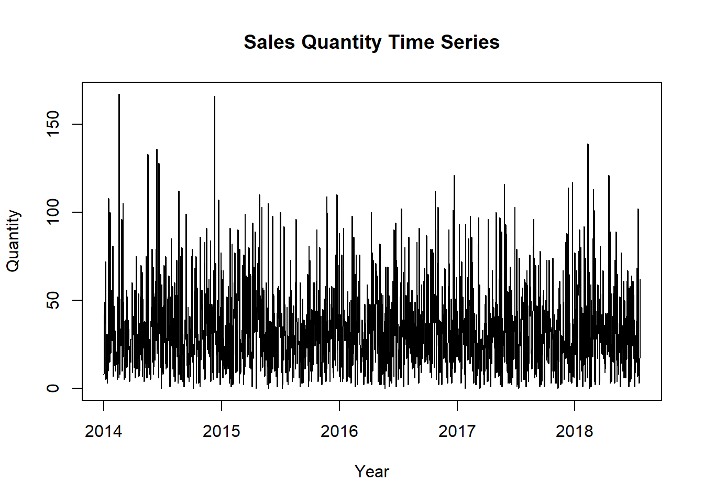
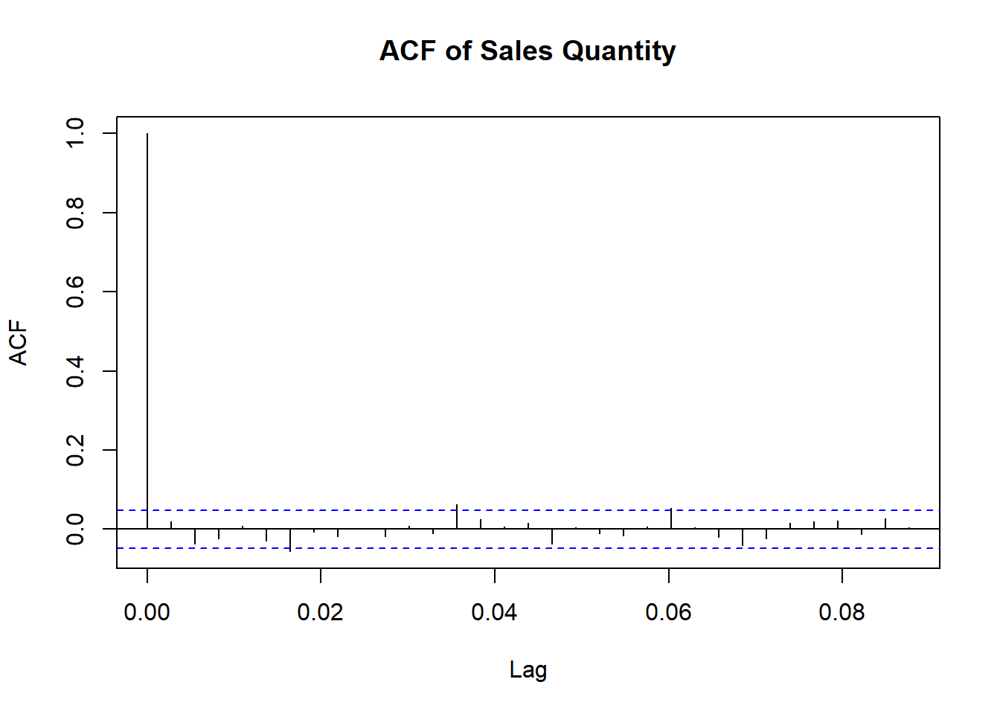
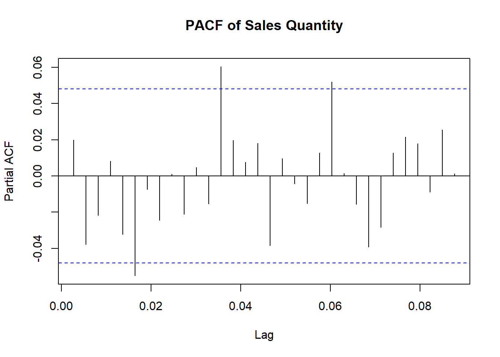
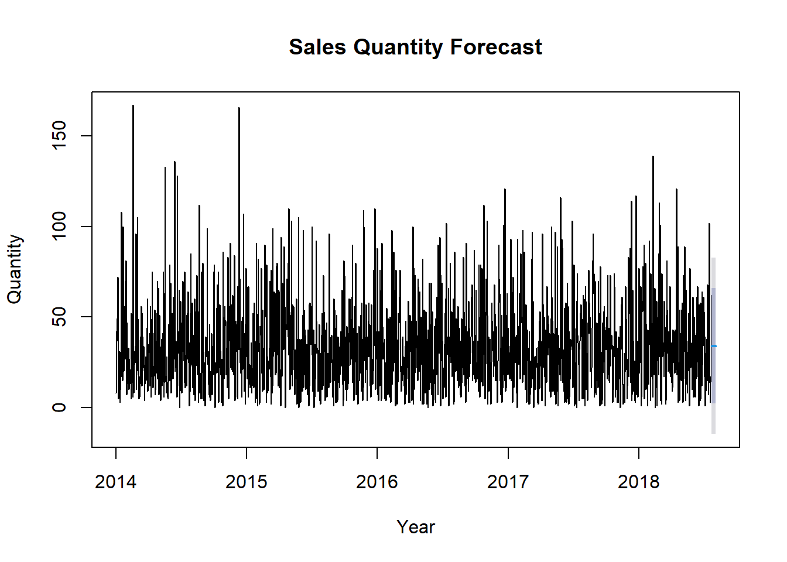
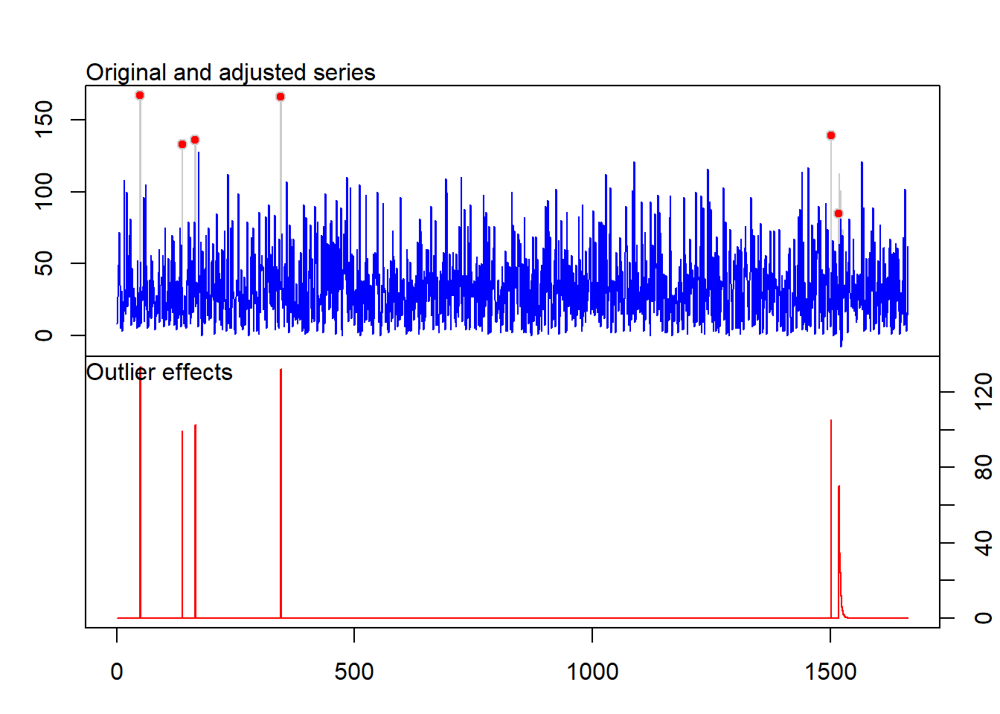
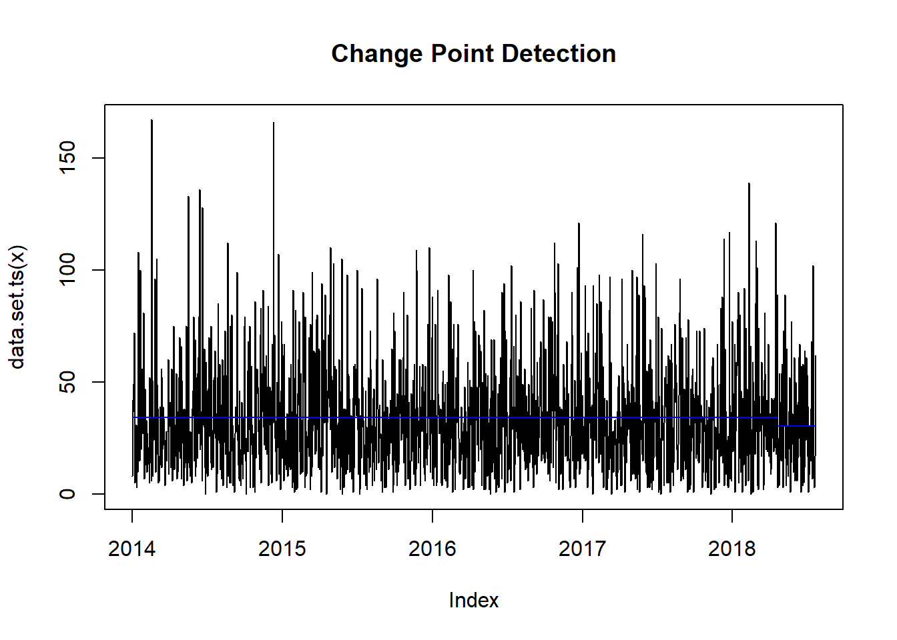

Chapter 7 Group 6: Documento Bookdown - Propuesta avance 6
7.1 Introducción
Este informe presenta un análisis de los datos de series temporales de la cantidad de ventas. Los datos fueron agregados por fecha de transacción, y se aplicaron varios tests y modelos estadísticos para entender los patrones subyacentes y predecir tendencias futuras. El análisis se realizó utilizando R, centrándose en la estacionariedad, el ajuste del modelo y la predicción utilizando ARIMA, así como en la detección de valores atípicos y puntos de cambio.
if(!require("forecast")) install.packages("forecast")
if(!require("tseries")) install.packages("tseries")
if(!require("timsac")) install.packages("timsac")
if(!require("ggplot2")) install.packages("ggplot2")
if(!require("changepoint")) install.packages("changepoint")
if(!require("tsoutliers")) install.packages("tsoutliers")
library(forecast)
library(tseries)
library(timsac)
library(ggplot2)
library(changepoint)
library(tsoutliers)7.2 Preprocesamiento de Datos
Los datos de cantidad de ventas fueron procesados inicialmente agregando las cantidades por fecha de transacción. La serie temporal se creó comenzando desde la primera fecha disponible, utilizando una frecuencia diaria para asegurar una cobertura integral del comportamiento de las ventas a lo largo del tiempo.
datos<-readxl::read_excel("MUESTRA SERIE TIEMPO.xlsx")
datos$transaction_date <- as.Date(datos$transaction_date, origin = "1900-01-01")
datos <- datos[order(datos$transaction_date), ]
# Aggregate the quantity sold per day (or other metric as needed)
agg_data <- aggregate(quantity ~ transaction_date, data = datos, sum)
# Convert the data to a time series starting from the earliest date
start_year <- as.numeric(format(min(agg_data$transaction_date), "%Y"))
start_day <- as.numeric(format(min(agg_data$transaction_date), "%j"))
# Create a time series object from the aggregated data
quantity.ts <- ts(agg_data$quantity, start = c(start_year, start_day), frequency = 365)
# Plot the original time series
plot(quantity.ts, main="Sales Quantity Time Series", ylab="Quantity", xlab="Year")
7.3 Prueba de Estacionariedad
Para determinar si la serie temporal era estacionaria, se aplicó un test de Dickey-Fuller Aumentado (ADF). Los resultados del test fueron:
- Estadístico Dickey-Fuller: -12.835
- Orden de Rezago: 11
- p-valor: 0.01
El p-valor fue menor a 0.05, lo cual indica que la serie temporal es estacionaria. Esto es crucial para garantizar la aplicabilidad de muchas técnicas de predicción estadística, ya que las series estacionarias generalmente producen modelos más fiables e interpretables.
# Test for stationarity using Augmented Dickey-Fuller test
adf_result <- adf.test(quantity.ts, alternative = "stationary")
print(adf_result)##
## Augmented Dickey-Fuller Test
##
## data: quantity.ts
## Dickey-Fuller = -12.835, Lag order = 11, p-value = 0.01
## alternative hypothesis: stationary7.4 Análisis de ACF y PACF
Las gráficas de la Función de Autocorrelación (ACF) y la Función de Autocorrelación Parcial (PACF) se utilizaron para determinar los parámetros apropiados para los términos AR y MA en el modelo ARIMA.
Gráfica ACF: Mostró autocorrelaciones significativas, lo cual ayudó a identificar el componente de media móvil (MA).
Gráfica PACF: Mostró autocorrelaciones parciales significativas, lo cual ayudó a identificar el componente autorregresivo (AR).


Estas gráficas proporcionan información sobre las dependencias temporales en los datos, que son fundamentales para seleccionar un modelo ARIMA adecuado.
7.5 Ajuste del Modelo ARIMA
Utilizando la función auto.arima, se seleccionó automáticamente el mejor modelo ARIMA. El modelo elegido fue:
- ARIMA(0,0,0) con media distinta de cero
- Coeficiente de la Media: 9.6422 (Error Estándar: 0.1255)
- Sigma^2 (Estimación de Varianza): 26.2
También se calcularon los valores de verosimilitud, AIC y BIC para evaluar la bondad del ajuste del modelo:
- Verosimilitud Logarítmica: -7699.62
- AIC: 15403.23
- BIC: 15414.06
## Series: quantity.ts
## ARIMA(0,0,0) with non-zero mean
##
## Coefficients:
## mean
## 34.0451
## s.e. 0.6082
##
## sigma^2 = 615.6: log likelihood = -7699.62
## AIC=15403.23 AICc=15403.24 BIC=15414.067.6 Predicción
Se generó una predicción para los próximos 12 períodos de tiempo utilizando el modelo ARIMA ajustado. Las predicciones puntuales junto con los intervalos de confianza del 80% y 95% fueron los siguientes:
Las predicciones sugieren una cantidad de ventas estable, centrada alrededor de 34.0451, con una variabilidad moderada representada por los intervalos de confianza.
# Forecast the next 12 time periods
forecast_result <- forecast(model, h = 12)
print(forecast_result)## Point Forecast Lo 80 Hi 80 Lo 95 Hi 95
## 2018.5562 34.0451 2.247558 65.84264 -14.58504 82.67524
## 2018.5589 34.0451 2.247558 65.84264 -14.58504 82.67524
## 2018.5616 34.0451 2.247558 65.84264 -14.58504 82.67524
## 2018.5644 34.0451 2.247558 65.84264 -14.58504 82.67524
## 2018.5671 34.0451 2.247558 65.84264 -14.58504 82.67524
## 2018.5699 34.0451 2.247558 65.84264 -14.58504 82.67524
## 2018.5726 34.0451 2.247558 65.84264 -14.58504 82.67524
## 2018.5753 34.0451 2.247558 65.84264 -14.58504 82.67524
## 2018.5781 34.0451 2.247558 65.84264 -14.58504 82.67524
## 2018.5808 34.0451 2.247558 65.84264 -14.58504 82.67524
## 2018.5836 34.0451 2.247558 65.84264 -14.58504 82.67524
## 2018.5863 34.0451 2.247558 65.84264 -14.58504 82.675247.7 Detección de Puntos de Cambio
Se realizó un análisis de puntos de cambio utilizando la función cpt.mean del paquete changepoint. El análisis tuvo como objetivo identificar cambios significativos en el nivel medio de la cantidad de ventas a lo largo del tiempo. El resultado mostró un punto de cambio detectado, lo cual sugiere un cambio notable en la cantidad promedio de ventas en un momento particular del tiempo. Este tipo de análisis es útil para entender cambios abruptos, como los causados por factores externos como promociones o cambios en el mercado.
# Plot the forecast
plot(forecast_result, main="Sales Quantity Forecast", ylab="Quantity", xlab="Year")
# Detect outliers in the time series
dat.ts <- ts(quantity.ts, frequency=1)
data.ts.outliers <- tso(dat.ts)
plot(data.ts.outliers)
# Detect change points in the time series
mval <- cpt.mean(quantity.ts, method = "AMOC")
plot(mval, type = "l", cpt.col = "blue", xlab = "Index", main = "Change Point Detection")
7.8 Conclusión
El análisis de la serie temporal de los datos de cantidad de ventas reveló las siguientes conclusiones clave:
- Estacionariedad: La serie se encontró estacionaria, lo que la hace adecuada para el modelado ARIMA.
- Modelo ARIMA: Se ajustó un modelo ARIMA(0,0,0) con media distinta de cero a los datos, lo cual sugiere un enfoque simple de predicción basado en el nivel medio.
- Predicción: La predicción indicó una cantidad de ventas esperada consistente, aunque los intervalos de confianza indicaron cierta variabilidad.
- Valores Atípicos y Puntos de Cambio: Se detectaron valores atípicos y puntos de cambio, lo cual destaca períodos con desviaciones significativas o cambios en los patrones de ventas. Estos hallazgos proporcionan una base para un análisis adicional, como la identificación de las causas de los valores atípicos o los puntos de cambio detectados y el uso de la predicción para la toma de decisiones en la gestión de inventarios y la cadena de suministro. También se puede considerar una mayor refinación del modelo para mejorar la precisión de las predicciones.